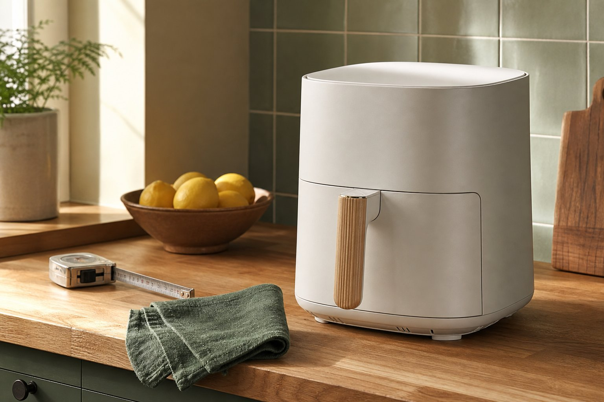

Will an air fryer fit on your counter?
Before you fall for the finish or the extra basket, measure the space you’ll actually use.
Check your counter →
Measure twice. Buy once.
Mark out your space
Choose the spot where you plan to cook. Measure its width, depth and height up to the lowest cabinet.
Check the exact model
Find its exterior dimensions and required clearances in the manufacturer’s instructions. Basket capacity isn’t a footprint.
Try the opening motion
Use a paper template to picture the drawer or door open. Where will you stand, and where will you set the basket down?
Check the footprint
Use centimetres throughout. For each axis, add the clearances required on both ends. Enter zero only if the instructions explicitly permit it. Leave unknowns blank.
Measurements stay in this page. A dimensional fit is not approval for installation or safe operation.
Why leave room for air?
In its E10 guidance for NA46x models, Philips specifies at least 15 cm around the air outlets. That figure is not a default for other models or for every side of an appliance. Follow the instructions for the exact appliance you’re considering.
Read Philips Support: NA46x air outlets ↗Checked November 20, 2026. The illustration does not identify a submitted Amazon product. No listing, price or performance claim is inferred.